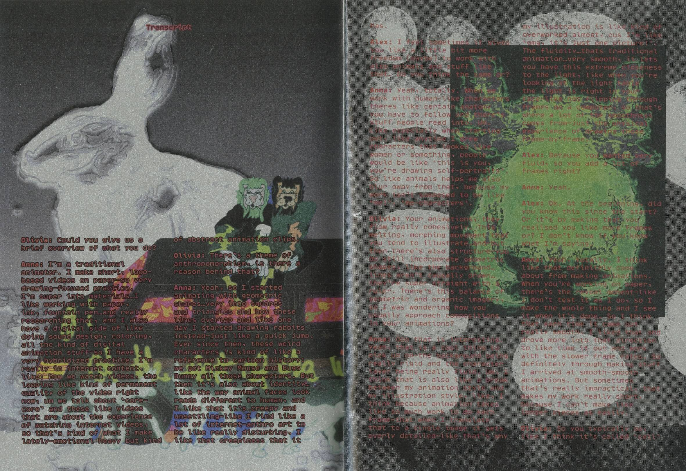
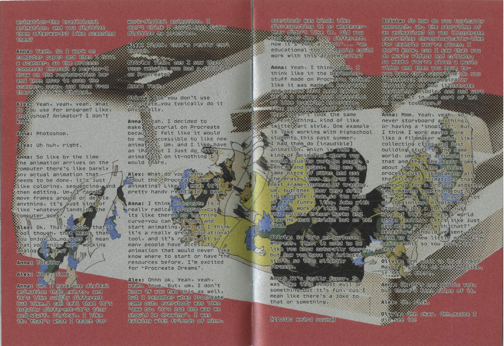
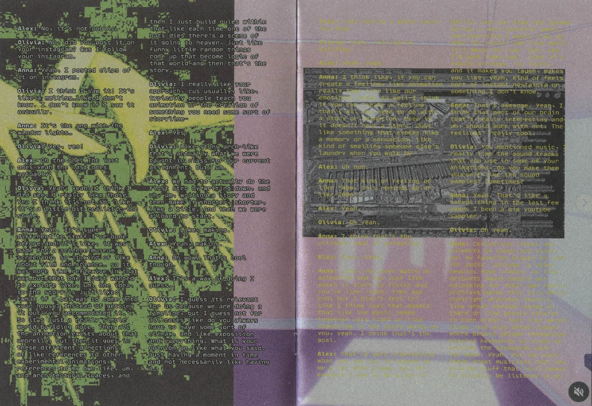
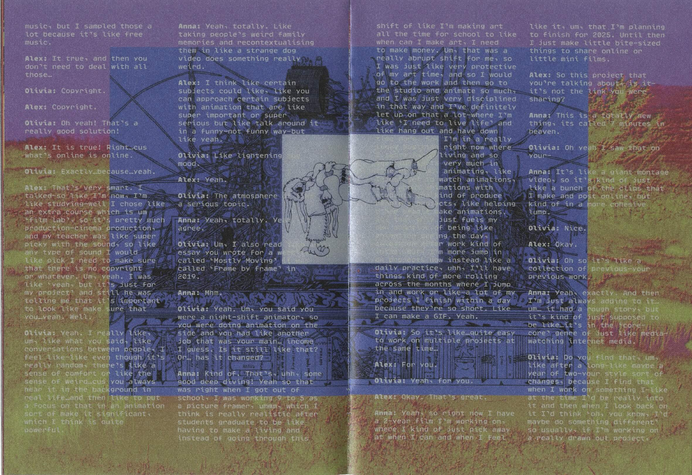
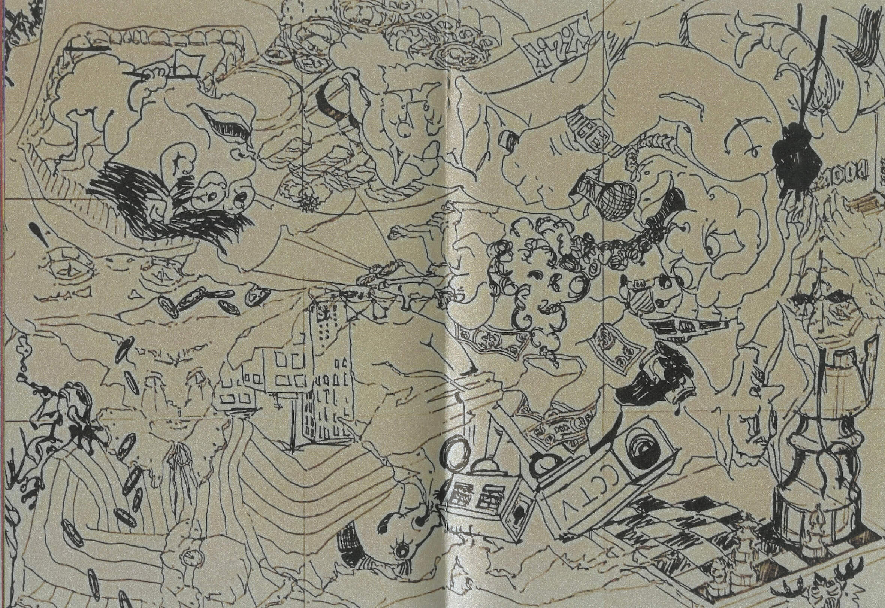
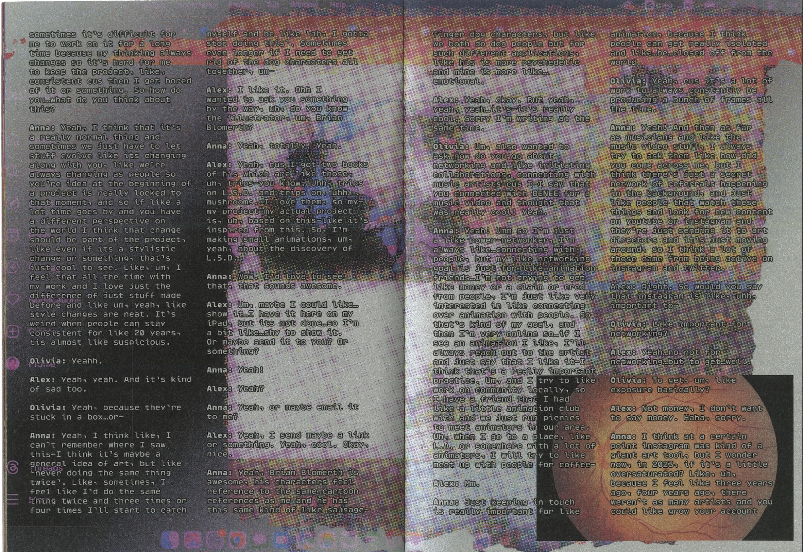
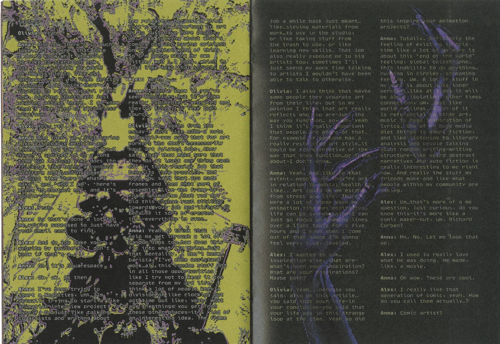
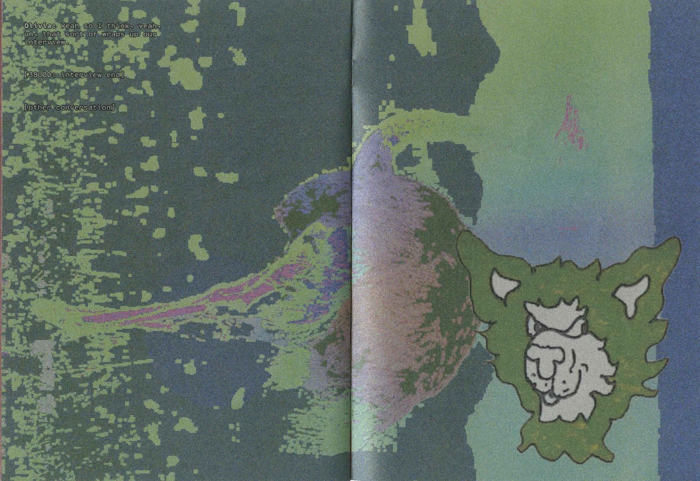
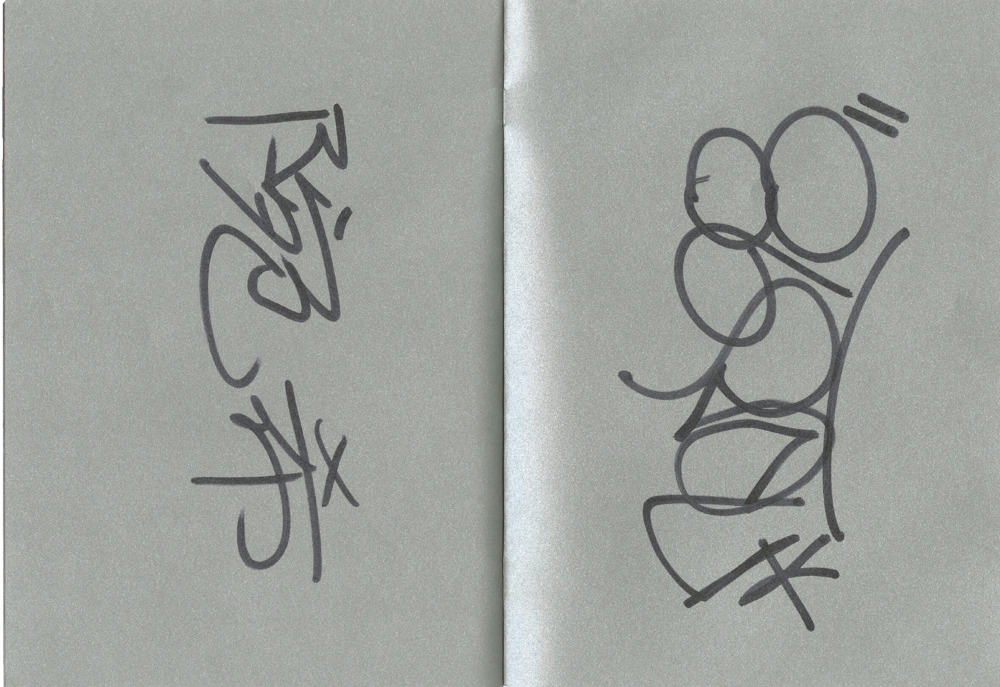
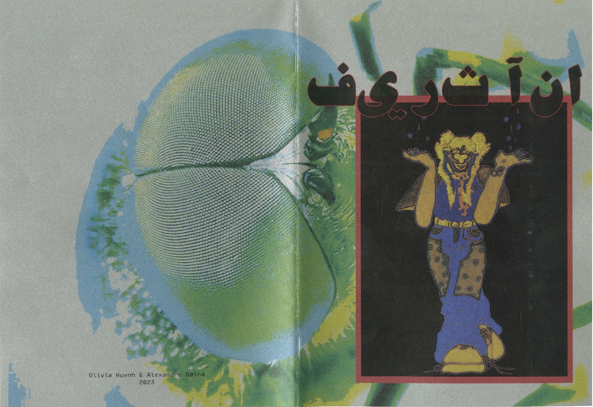
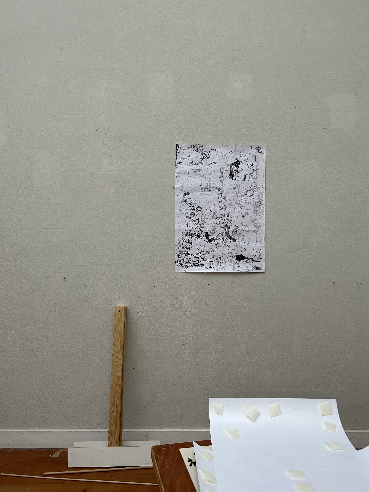
The transcript of an interview hosted by Olivia Huynh and Alexandre Daïna with animator Anna Firth over videocall, where they discuss Anna's lore, her animation practice in the San Francisco Bay Area, the local art scene and advice about navigating a career in art.
Graphic Design · Publication
20 pages | 165 × 230 mm | English
The Hague, December 2023